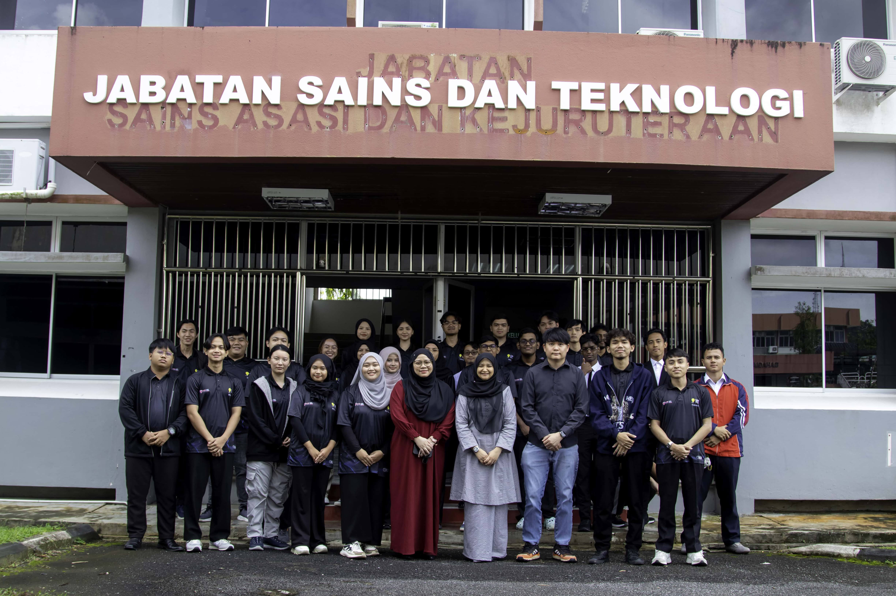
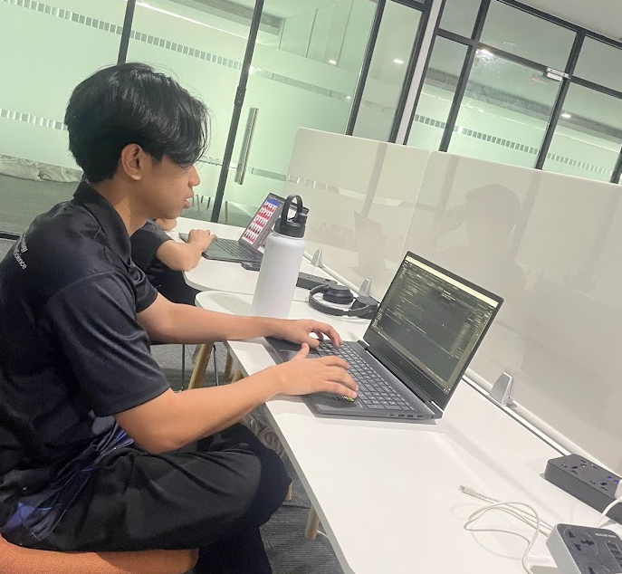

About Me
Developer, Designer, Learner.
Path to Tech
I started in fine arts, where I developed creativity and problem-solving skills. Over time, I transitioned into technology, combining design with logic. Now, as a Computer Science student at Universiti Putra Malaysia, I specialize in web development and software engineering, applying both theory and hands-on experience to build efficient, user-focused solutions.
I began in fine arts, developing creativity and problem-solving. Now, as a Computer Science student at Universiti Putra Malaysia, I specialize in web development and software engineering to create efficient, user-focused solutions.

What I Do
I build responsive, user-friendly websites using React, JavaScript, and Tailwind CSS. With experience in database management and data preprocessing, I focus on creating efficient, scalable systems that optimize performance and deliver seamless user experiences. I am prepared to tackle any challenge, bringing my skills to create impactful solutions that drive results.
I build responsive websites with React, JavaScript, and Tailwind CSS, focusing on efficient, scalable systems. With experience in database management and data preprocessing, I create impactful solutions that drive results.

My Focus
I’m dedicated on refining my skills in web development, AI, and software engineering to build cutting-edge solutions. Through continuous learning, research, and real-world projects, I aim to develop impactful technology that improves digital experiences, optimizes workflows, and solves complex real-world problems.